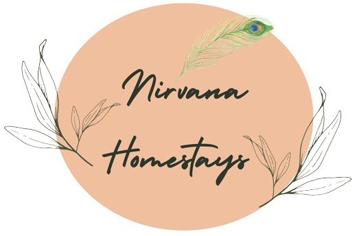
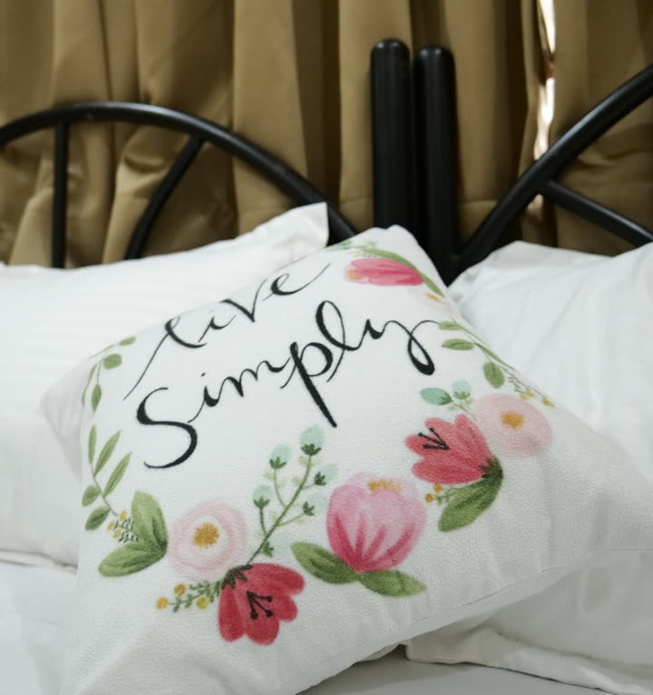
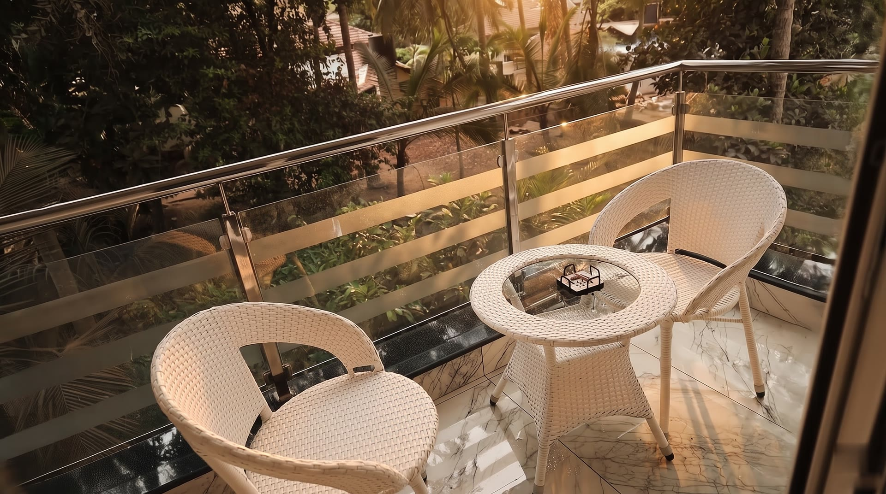
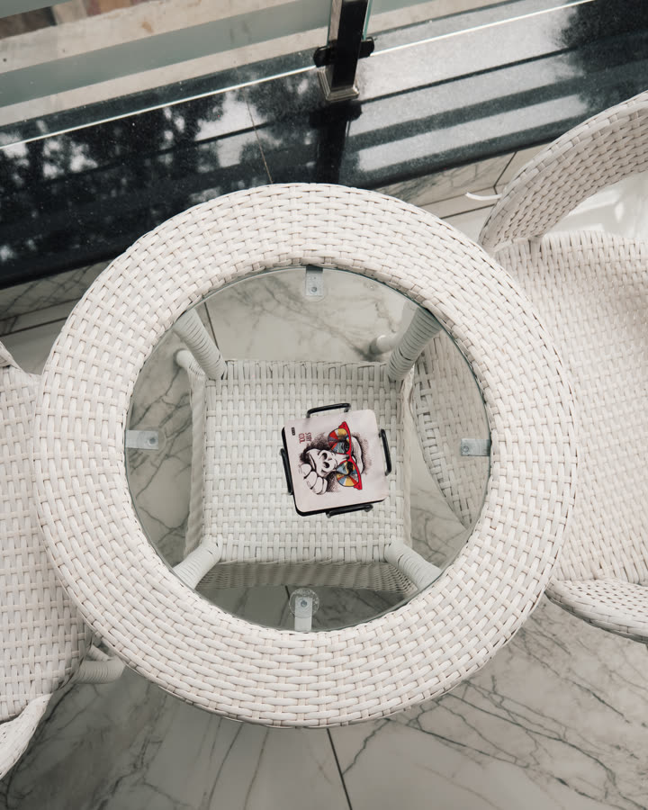
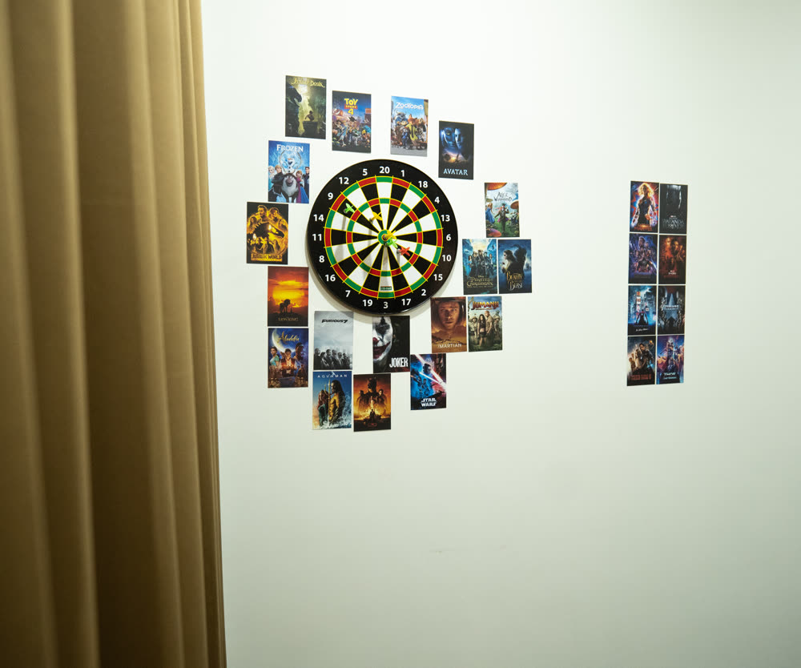
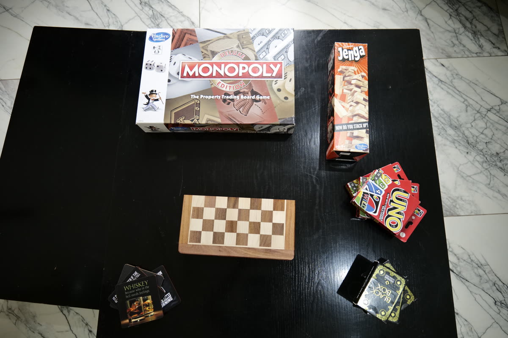
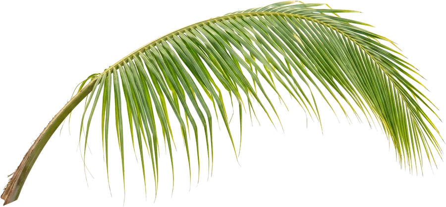
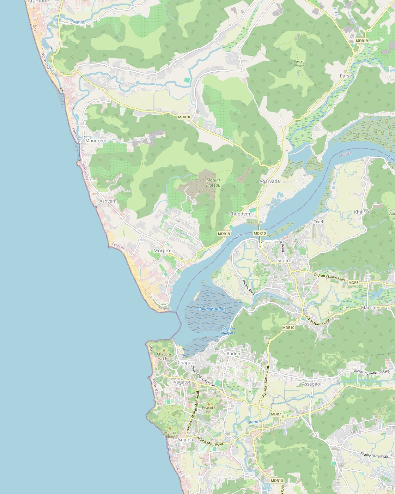

Moksh
Zen and unhurried. A resting Buddha, a woven rattan lamp and a lapis-blue marble bathroom.
Explore Moksh
A boutique homestay in Siolim, North Goa. Every room has its own story and its own balcony.
White linen, cane chairs and a balcony full of palms. Slow mornings in a quiet village on the Chapora River.

Each room is themed around a film or a feeling. Pick the one that fits your trip.
Zen and unhurried. A resting Buddha, a woven rattan lamp and a lapis-blue marble bathroom.
Explore MokshNamed for the trip every group of friends plans. Dil Chahta Hai on the door, palms on the balcony.
Explore Go Goa Gone"Pitcher abhi baaki hai" on the door, Bollywood classics from Sholay to Gangs of Wasseypur on the walls, and a green marble bathroom.
Explore Filmy Chakkar
Wicker chairs, a glass-top table and a view into the trees. Morning chai, out on your own balcony.

A lounge stocked with board games, and a game room with foosball and darts. Rainy afternoons, sorted.



Siolim sits on the Chapora River and is known for its São João boat festival every June. The beaches of Morjim, Ashwem, Vagator and Anjuna are close by.
The beaches run north and south of the Chapora River, and every one of them is a short drive away.
Driving distances from the stay. Times are approximate and depend on traffic.
